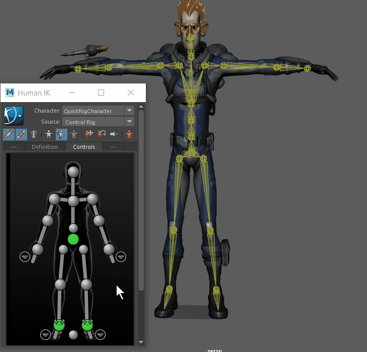
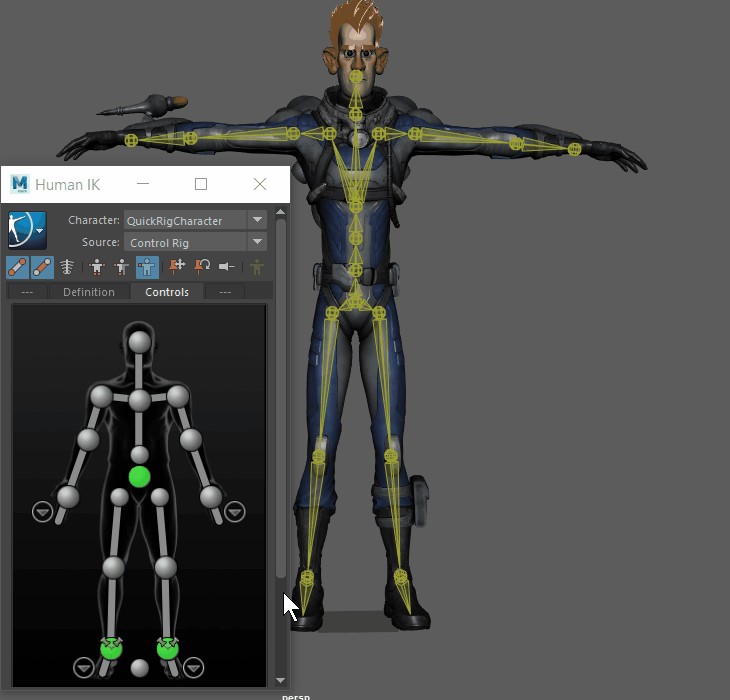

设置关键帧模式图标位于 HumanIK 窗口顶部
通过 HumanIK 窗口的“控制”(Controls)选项卡工具栏上的操纵和设置关键帧模式按钮，您可以设置在角色的控制绑定上设置关键帧的操纵模式。您可以操纵角色的整个身体（“全身”(Full Body)）、身体的一部分（“身体部位”(Body Part)）或仅选定的效应器（“选择”(Selection)）以及在其上设置关键帧。
操纵模式确定关键帧的设置对象，因此，如果选择“全身”(Full Body)作为设置关键帧模式，则在角色的整个身体上设置关键帧。
- “全身”(Full Body)设置关键帧模式
- 在“全身”(Full Body)模式
 下，您可以使用各个效应器来操纵角色的整个身体。例如，在“全身”(Full Body)模式下平移角色的腕部效应器将在全身移动以融合该效应器时影响它。
下，您可以使用各个效应器来操纵角色的整个身体。例如，在“全身”(Full Body)模式下平移角色的腕部效应器将在全身移动以融合该效应器时影响它。
-

选择“全身”(Full Body)以在操纵效应器时对整个身体使用效应器
-
在“全身”(Full Body)模式下，角色对操纵做出的反应取决于效应器的固定方式。例如，在“全身”(Full Body)模式中平移角色的腕部效应器将在全身移动以到达该效应器时影响它。注： 在此模式下强制使用初始姿势将强制角色采用 T 形站姿，这会使角色相对于其引用节点进行偏移。
- “身体部位”(Body Part)设置关键帧模式
-
在“身体部位”(Body Part)模式下，您可以使用各个效应器来仅操纵选定的身体部位。身体其余部位上的效应器不受影响。
例如，如果在“身体部位”(Body Part)模式下移动角色的左腕效应器，则仅左侧受影响，而不是整个身体受影响。右侧手臂、髋部、胸部、头部及所有其他效应器不会移动。 -

-
在“身体部位”(Body Part)模式下，是在选定身体部位的效应器上设置关键帧。例如，在“身体部位”(Body Part)设置关键帧模式下，如果在选择了左腕效应器的情况下设置关键帧，则在左腕、左肘和左肩上设置关键帧。
-
在“身体部位”(Body Part)模式下，您可以基于选定的效应器，操纵单个身体部位以及在其上设置关键帧。注： 在此模式下强制使用初始姿势（参见下文）将强制选定的身体部位采用初始姿势。如果髋部是选择的一部分，则角色将相对于其引用节点进行偏移。
- “选择”(Selection)设置关键帧模式
-


-
将工具设置为“选择”(Selection)模式，允许您仅操纵和设置选定效应器的关键帧。
在该模式下，您可以操纵一个效应器，而无需解决角色的其他部位，然后使用“HumanIK 控制”(HumanIK Controls)来调整角色的其他部位对于该效应器所能达到的程度。
“角色”(Character)表示以白色亮显单元，以显示角色的哪个部位可用于操纵和设置关键帧。例如，在“身体部位”(Body Part)操纵模式下，如果选择左腕效应器，“角色”(Character)表示中的所有左臂单元都将亮显为白色。有关单元反馈的详细信息，请参见控制角色表示。
固定
这些图标允许您激活、禁用或暂时解除效应器上的固定。
固定可以更好地控制角色操纵，允许您在调整角色其他部位的位置时，约束特定效应器不移动或旋转。例如，可以固定腕部不旋转，但允许它在平移中移动，以便在调整腕部位置或手臂位置时，手腕可以移动但不会扭曲。
默认情况下，在创建 HumanIK 控制绑定时，该角色脚部的 IK 效应器会在平移和旋转中固定不动。
固定反馈会显示在“角色”(Character)表示中的每个单元上。
| 固定平移(Pin Translation) |
固定和解除固定平移中的选定效应器。 固定后，选定的效应器将无法移动，同时，在“角色”(Character)表示中的相应单元上将显示一个固定图标。
提示： 使用 Alt + W 热键启用或禁用“固定平移”(Pin Translation)。
|
|
| 固定旋转(Pin Rotation) |
固定和解除固定旋转中的选定效应器。 固定后，选定的效应器将无法旋转，同时，在“角色”(Character)表示中的相应单元上将显示一个固定图标。
提示： 使用 Alt + E 热键启用或禁用“固定旋转”(Pin Rotation)。
|
|
| 释放所有固定(Release All Pinning) |
暂时释放选定的效应器和链下效应器的所有平移或旋转固定。 |